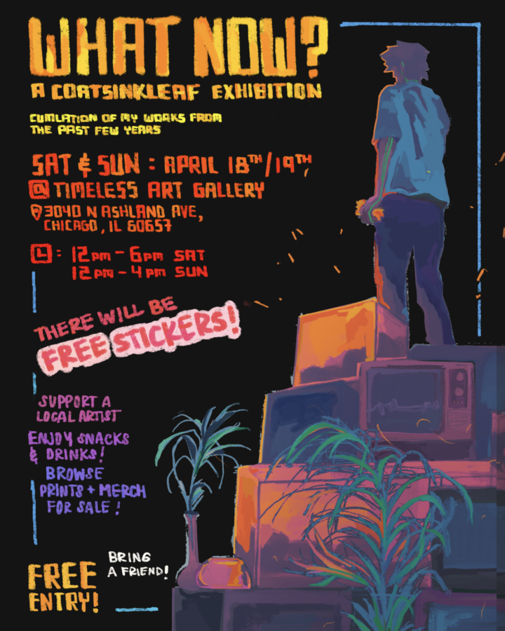

What Now? A Cortsinkleaf Exhibition
COATSINKLEAF is heading back to the other side of the world, perhaps sooner than later, so this is the official going away party exhibition of his works from the past several years, going into his college years and beyond.
Kicks off at NOON both days.
Noon – 6:00 PM Saturday, March 18
Noon – 4:00 PM Sunday, March 19
Timeless Arts Gallery & Studio
3040 N. Ashland Ave., Chicago (312) 685-2311
Free Parking all around the gallery.
CTA Accessible. Belmont (77), Ashland (9) and Diversey (76) buses